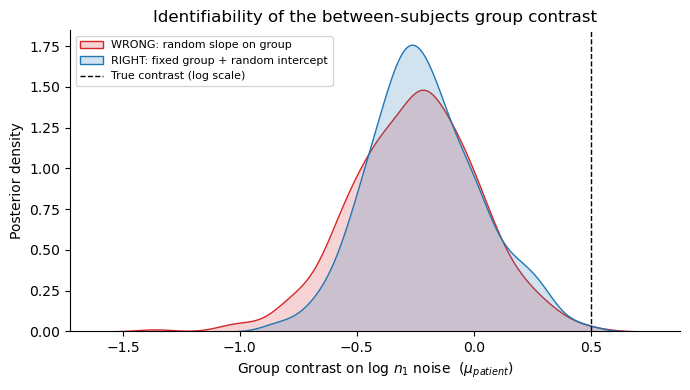

Lesson 10: Fixed vs random effects (fixed_regressors / random_regressors)¶
bauer’s regression models let you put a patsy formula on any model parameter — for example, regress the encoding noise n1_evidence_sd on subject group, ISI, or session. The question this lesson answers is: for each term in that formula, is the coefficient a single population-level number, or does it vary from subject to subject?
That is the distinction between a fixed and a random effect, and getting it right matters both statistically (it changes what the posterior means) and numerically (the wrong choice produces a poorly-identified, badly-mixing model). bauer 0.3.0 introduces an explicit API for it:
fixed_regressors={param: formula}— the population-mean design. Each column gets one coefficient shared by everyone (group_mu), with no per-subject offset.random_regressors={param: formula}— which of those columns additionally carry a per-subject random effect (group_mu + group_sd * offset, i.e. partial pooling). Omitted ⇒ defaults to'1'(a random intercept only).
The old regressors={param: formula} keyword still works but is deprecated: it silently put a random slope on every column — which is wrong for between-subjects covariates, as we’ll see.
Setup¶
We import bauer from this worktree (the 0.3.0 release branch) and force JAX onto the CPU so the tiny example fits run anywhere. Everything below is sized to run in well under a minute on a laptop.
[ ]:
import os, sys
os.environ.setdefault('JAX_PLATFORMS', 'cpu') # tiny CPU fits only
# Make sure we import the 0.3.0 worktree, not an older editable install.
# The notebook lives in <repo>/docs/tutorial, so the repo root is two levels up.
for _root in (os.path.abspath(os.path.join(os.getcwd(), '..', '..')), os.getcwd()):
if os.path.isdir(os.path.join(_root, 'bauer')):
sys.path.insert(0, _root)
break
import warnings
import numpy as np
import pandas as pd
import arviz as az
import matplotlib.pyplot as plt
import seaborn as sns
import bauer
from bauer.models import MagnitudeComparisonRegressionModel
print('bauer', bauer.__version__, 'from', os.path.dirname(bauer.__file__))
bauer 0.3.0 from /private/tmp/bauer-rel-smoke/bauer
1. Fixed vs random, conceptually¶
Say we regress a parameter \(\theta\) (here, log encoding noise) on a single binary covariate \(x\) with a design Intercept + x. For subject \(s\) on trial with covariate value \(x\), bauer builds the coefficient vector as
applied column by column, where \(z_s \sim \mathcal{N}(0, 1)\) is a standardised per-subject offset and \(\sigma\) is a group-level SD (the non-centred parameterisation).
A fixed effect on a column keeps only the \(\mu\) term: one number for everyone, no \(\sigma z_s\). Use this when you believe the effect is the same in the population (e.g. the average difference between two groups).
A random effect on a column adds the \(\sigma z_s\) term: the coefficient is partially pooled, each subject shrunk toward the group mean by an amount the data decide. Use this for quantities that genuinely differ subject-to-subject (e.g. each person’s baseline noise level — the intercept — or each person’s sensitivity to a within-subject manipulation).
In bauer 0.3.0, fixed_regressors columns get only group_mu; the columns named in random_regressors also get group_sd * offset.
2. A tiny synthetic dataset¶
Six subjects, two groups (3 “control”, 3 “patient”). Group is a between-subjects covariate: it is constant within each subject — a person is a patient on every one of their trials. We make the patients genuinely noisier, plus a per-subject baseline so there is real between-subject variability in the intercept.
[ ]:
rng = np.random.default_rng(0)
n_sub = 6
groups = ['control'] * 3 + ['patient'] * 3
base_ns = np.array([5, 7, 10, 14, 20])
fracs = np.array([0.7, 0.85, 1.0, 1.18, 1.4])
rows = []
for s in range(n_sub):
grp = groups[s]
grp_offset = 0.5 if grp == 'patient' else 0.0 # true fixed group effect
subj_intercept = rng.normal(0, 0.3) # true random intercept
log_noise = -0.7 + grp_offset + subj_intercept
noise = np.log1p(np.exp(log_noise)) # softplus -> positive SD
for n1 in base_ns:
for f in fracs:
for _ in range(6):
n2 = n1 * f
d = (np.log(n2) - np.log(n1)) / (np.sqrt(2) * noise)
p = 1 / (1 + np.exp(-2.5 * d))
rows.append((s + 1, n1, n2, int(rng.random() < p), grp))
df = pd.DataFrame(rows, columns=['subject', 'n1', 'n2', 'choice', 'group'])
df = df.set_index(['subject', df.groupby('subject').cumcount().rename('trial')])
print(df.head())
print('trials per subject:', df.groupby('subject').size().tolist())
print('group is constant within subject:',
bool((df.reset_index().groupby('subject')['group'].nunique() == 1).all()))
n1 n2 choice group
subject trial
1 0 5 3.5 0 control
1 5 3.5 1 control
2 5 3.5 1 control
3 5 3.5 0 control
4 5 3.5 0 control
trials per subject: [150, 150, 150, 150, 150, 150]
group is constant within subject: True
Note the last line: group has exactly one value per subject. That is the defining feature of a between-subjects covariate, and it is what makes a random slope on it a mistake.
3. The deprecated regressors= keyword¶
Before 0.3.0 you wrote regressors={param: formula}. That single keyword did two things at once: it added the columns to the population-mean design and gave every column a per-subject random effect. It still works (bit-for-bit) but now emits a DeprecationWarning.
[ ]:
with warnings.catch_warnings(record=True) as caught:
warnings.simplefilter('always')
m_legacy = MagnitudeComparisonRegressionModel(
df, regressors={'n1_evidence_sd': 'C(group)'})
for w in caught:
if issubclass(w.category, DeprecationWarning):
print('DeprecationWarning:', str(w.message).split('.')[0])
DeprecationWarning: `regressors` is deprecated: it puts a per-subject random effect on EVERY term (a random slope even on between-subjects contrasts like group)
The deprecation message tells you exactly what to do: split the formula into a fixed_regressors part (population means) and a random_regressors part (per-subject effects). The legacy call is equivalent to fixed_regressors = random_regressors = {'n1_evidence_sd': 'C(group)'} — a random slope on the group contrast, which is the pitfall we turn to now.
4. The pitfall: a random slope on a between-subjects covariate¶
Consider what a random slope on C(group) actually asks for. The design has two columns, Intercept and C(group)[T.patient]. A random slope means every subject gets a per-subject offset on both columns:
But patient\(_s\) is 0 for every control subject. So:
For the three control subjects, the
patientcolumn is identically zero — their offset \(z_{s,1}\) is multiplied by 0 on every trial. It enters the likelihood nowhere. Those are non-identified nuisance dimensions: NUTS just samples them from the prior, wasting geometry and dragging down the effective sample size.For the three patient subjects, the
patientcolumn is 1, so they each carry an extra random-effect term that controls don’t. The model now believes patients are heteroscedastically more variable than controls — an artefact of the parameterisation, not of the data.Worst of all, the per-subject
patientoffset \(\sigma_1 z_{s,1}\) is, for each patient, perfectly confounded with that subject’s intercept offset \(\sigma_0 z_{s,0}\): both are constants added to all of that subject’s trials. The data cannot tell them apart. This degeneracy inflates the posterior on the group contrast \(\mu_1\) and under-identifies it.
The fix is to make the group difference a fixed effect and keep a random intercept:
fixed_regressors = {'n1_evidence_sd': 'C(group)'} # population mean: intercept + group
random_regressors = {'n1_evidence_sd': '1'} # per-subject: intercept only
Now the group difference is a single population number (as it should be — there is only one control-vs-patient contrast in the world), and the genuine between-subject variability lives where it belongs: in the random intercept. bauer warns you if you ask for the wrong thing.
[ ]:
# WRONG: random slope on a between-subjects covariate
with warnings.catch_warnings(record=True) as caught:
warnings.simplefilter('always')
m_wrong = MagnitudeComparisonRegressionModel(
df,
fixed_regressors={'n1_evidence_sd': 'C(group)'},
random_regressors={'n1_evidence_sd': 'C(group)'})
m_wrong.build_estimation_model(df, hierarchical=True)
for w in caught:
if issubclass(w.category, UserWarning) and not issubclass(w.category, DeprecationWarning):
print('UserWarning:', str(w.message)[:200], '...')
UserWarning: random_regressors for 'n1_evidence_sd' includes 'C(group)[T.patient]', which is constant within subject (a between-subjects regressor). A per-subject random effect on it is non-identified for off-grou ...
[ ]:
# RIGHT: fixed group contrast + random intercept (no warning)
m_right = MagnitudeComparisonRegressionModel(
df,
fixed_regressors={'n1_evidence_sd': 'C(group)'},
random_regressors={'n1_evidence_sd': '1'})
m_right.build_estimation_model(df, hierarchical=True)
print('built cleanly')
built cleanly
5. The two parameterisations, in the model graph¶
We don’t even need to sample to see the difference. The per-subject offset variable n1_evidence_sd_offset carries different dimensions in the two models. In the WRONG model it spans the full regressor coordinate (Intercept and group); in the RIGHT model it spans a dedicated random-effects coordinate (_re) containing only the intercept.
[ ]:
def offset_dims(model, name='n1_evidence_sd'):
var = f'{name}_offset'
dims = model.named_vars_to_dims[var]
coords = {d: list(model.coords[d]) for d in dims if d in model.coords}
return dims, coords
for label, m in [('WRONG (random slope on group)', m_wrong),
('RIGHT (fixed group + random intercept)', m_right)]:
dims, coords = offset_dims(m.estimation_model)
print(label)
print(' offset dims :', tuple(dims))
last = list(dims)[-1]
print(' columns with a per-subject random effect:', coords[last])
print()
WRONG (random slope on group)
offset dims : ('subject', 'n1_evidence_sd_regressors')
columns with a per-subject random effect: ['Intercept', 'C(group)[T.patient]']
RIGHT (fixed group + random intercept)
offset dims : ('subject', 'n1_evidence_sd_re')
columns with a per-subject random effect: ['Intercept']
The WRONG model gives all 6 subjects a per-subject C(group)[T.patient] offset — including the 3 controls, for whom that column is always zero. The RIGHT model has a random effect only on the Intercept, exactly as intended. The group contrast lives purely in the population-mean node n1_evidence_sd_mu.
6. A quick fit: the contrast is wider / less identified in the WRONG model¶
Now a short real fit of both models (numpyro backend, draws = tune = 200, 2 chains). This runs in a few seconds each on CPU. We compare the posterior on the group contrast n1_evidence_sd_mu[C(group)[T.patient]].
[ ]:
def quick_fit(m):
m.sample(draws=200, tune=200, chains=2, backend='numpyro',
target_accept=0.9, random_seed=1, progressbar=False)
return m.idata
with warnings.catch_warnings():
warnings.simplefilter('ignore') # silence the few-chains / low-ESS notices
idata_wrong = quick_fit(m_wrong)
idata_right = quick_fit(m_right)
print('done sampling')
We recommend running at least 4 chains for robust computation of convergence diagnostics
The rhat statistic is larger than 1.01 for some parameters. This indicates problems during sampling. See https://arxiv.org/abs/1903.08008 for details
The effective sample size per chain is smaller than 100 for some parameters. A higher number is needed for reliable rhat and ess computation. See https://arxiv.org/abs/1903.08008 for details
We recommend running at least 4 chains for robust computation of convergence diagnostics
The rhat statistic is larger than 1.01 for some parameters. This indicates problems during sampling. See https://arxiv.org/abs/1903.08008 for details
The effective sample size per chain is smaller than 100 for some parameters. A higher number is needed for reliable rhat and ess computation. See https://arxiv.org/abs/1903.08008 for details
done sampling
[ ]:
def contrast_samples(idata):
return idata.posterior['n1_evidence_sd_mu'].sel(
n1_evidence_sd_regressors='C(group)[T.patient]').values.ravel()
c_wrong = contrast_samples(idata_wrong)
c_right = contrast_samples(idata_right)
summary = pd.DataFrame({
'posterior SD (contrast)': [c_wrong.std(), c_right.std()],
'95% HDI width': [np.diff(az.hdi(c_wrong, hdi_prob=.95))[0],
np.diff(az.hdi(c_right, hdi_prob=.95))[0]],
'ESS (bulk)': [
float(az.ess(idata_wrong, var_names=['n1_evidence_sd_mu']
)['n1_evidence_sd_mu'].sel(
n1_evidence_sd_regressors='C(group)[T.patient]')),
float(az.ess(idata_right, var_names=['n1_evidence_sd_mu']
)['n1_evidence_sd_mu'].sel(
n1_evidence_sd_regressors='C(group)[T.patient]')),
],
}, index=['WRONG: random slope on group', 'RIGHT: fixed group + random intercept'])
summary.round(3)
| posterior SD (contrast) | 95% HDI width | ESS (bulk) | |
|---|---|---|---|
| WRONG: random slope on group | 0.269 | 1.053 | 194.000 |
| RIGHT: fixed group + random intercept | 0.236 | 0.922 | 373.975 |
The WRONG model’s group contrast has a wider posterior and lower effective sample size — the confounding with the per-subject intercept offsets inflates and under-identifies it. The exact numbers wiggle with such a tiny fit, but the direction is the systematic consequence of the bad parameterisation. Let’s plot the two contrast posteriors.
[ ]:
fig, ax = plt.subplots(figsize=(7, 4))
for c, label, color in [(c_wrong, 'WRONG: random slope on group', 'C3'),
(c_right, 'RIGHT: fixed group + random intercept', 'C0')]:
sns.kdeplot(c, ax=ax, label=label, color=color, fill=True, alpha=0.2)
ax.axvline(0.5, color='k', ls='--', lw=1, label='True contrast (log scale)')
ax.set_xlabel('Group contrast on log $n_1$ noise ($\mu_{patient}$)')
ax.set_ylabel('Posterior density')
ax.set_title('Identifiability of the between-subjects group contrast')
ax.legend(fontsize=8)
sns.despine()
plt.tight_layout()

7. When is a random slope correct?¶
Random slopes are not bad — they are bad only on between-subjects covariates. For a within-subject manipulation (one that takes different values across a single subject’s own trials — ISI, session, trial type, stimulus condition) a random slope is exactly right: it lets each subject have their own sensitivity, partially pooled toward the group. There the per-subject offset is identified, because the covariate genuinely varies within the subject.
So the rule of thumb is:
Covariate type |
Varies within subject? |
Put it in… |
|---|---|---|
Between-subjects (group, sex, patient/control) |
No |
|
Within-subject (ISI, session, condition) |
Yes |
|
You can mix them in one formula. For example, a fixed group contrast plus a random slope on a within-subject ISI:
fixed_regressors = {'n1_evidence_sd': 'C(group) + isi'}
random_regressors = {'n1_evidence_sd': 'isi'} # per-subject ISI slope + (implicit) intercept
bauer validates that every random_regressors term is a subset of the fixed design, and warns whenever a requested random term turns out to be constant within subject — catching the footgun before it costs you a night of debugging non-convergence.
Summary¶
Fixed effect = one population-level coefficient (
group_mu), shared by all subjects. Random effect = population mean plus a partially-pooled per-subject deviation (group_mu + group_sd * offset).In bauer 0.3.0, declare them explicitly:
fixed_regressorsfor the population-mean design,random_regressorsfor the per-subject part (default: random intercept only).The legacy
regressors=keyword is deprecated — it put a random slope on every column, which is wrong for between-subjects covariates.A random slope on a between-subjects covariate (constant within subject) creates non-identified per-subject offsets, heteroscedastic-by-group variance, and an inflated/under-identified group contrast. The correct pattern is a fixed group effect with a random intercept.
Random slopes are appropriate for within-subject covariates, where the per-subject offset is actually identified.